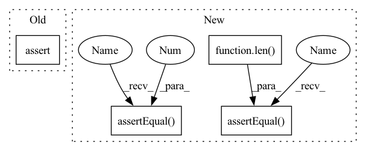

Pattern ID :27565
Before Change
min_f, inps = minifier(failing_f, inps, pass_checker)
assert len(min_f.graph.nodes) == 3
assert len(inps) == 1
if __name__ == "__main__":After Change
return torch.isnan(fx_g(*inps)[0]).any()
min_f, inps = minifier(failing_f, inps, has_nans)
self.assertEqual(len( min_f.graph.nodes) , 3)
self.assertEqual( len(inps), 1 )
def test_input_returned(self):
def f(a, b, c):
a = a.sin()In pattern: SUPERPATTERN
Frequency: 3
Non-data size: 4
Instances Fragment ID: 81878465
Project Name: pytorch/pytorch
Commit Name: f77adb71cb78eabf8967d1d8139dfd893d58c5c5
Time: 2022-08-16
Author: chilli@fb.com
File Name: functorch/test/test_minifier.py
M Class Name: TestMinifier
N Class Name: TestMinifier
M Method Name: test_has_add_mul(1)
N Method Name: test_has_add_mul(1)
M Parent Class: TestCase
N Parent Class: TestCase
M File Name: functorch/test/test_minifier.py
N File Name: functorch/test/test_minifier.py
M Start Line: 48
M End Line: 49
N Start Line: 37
N End Line: 49
Before Change
min_f, inps = minifier(failing_f, inps, pass_checker)
assert len(min_f.graph.nodes) == 3
assert len(inps) == 1
if __name__ == "__main__":After Change
return torch.isnan(fx_g(*inps)[0]).any()
min_f, inps = minifier(failing_f, inps, has_nans)
self.assertEqual( len(min_f.graph.nodes), 3 )
self.assertEqual(len( inps) , 1)
def test_input_returned(self):
def f(a, b, c):
a = a.sin() Fragment ID: 81878464
Project Name: pytorch/pytorch
Commit Name: f77adb71cb78eabf8967d1d8139dfd893d58c5c5
Time: 2022-08-16
Author: chilli@fb.com
File Name: functorch/test/test_minifier.py
M Class Name: TestMinifier
N Class Name: TestMinifier
M Method Name: test_has_add_mul(1)
N Method Name: test_has_add_mul(1)
M Parent Class: TestCase
N Parent Class: TestCase
M File Name: functorch/test/test_minifier.py
N File Name: functorch/test/test_minifier.py
M Start Line: 48
M End Line: 49
N Start Line: 37
N End Line: 49
Before Change
sampler_config = SamplerConfig(n_samples=n_samples)
labeled_set, added_set = agent.query(sampler_config=sampler_config)
assert len(added_set) <= len(labeled_set)
assert set(added_set).issubset(labeled_set)
After Change
sampler_config = SamplerConfig(n_samples=n_samples)
labeled_set, added_set = agent.query(sampler_config=sampler_config)
self.assertEqual( n_old_labeled + len(added_set), len(labeled_set))
assert set(added_set).issubset(labeled_set)
self.assertEqual(len( list(set(agent.labeled_set) & set(agent.unlabeled_set))) , 0 )
self.assertEqual(n_old_unlabeled - len(added_set), len(agent.unlabeled_set))
def test_agent_wrong_scores(self):
self.api_workflow_client.embedding_id = "embedding_id_xyz" Fragment ID: 81878467
Project Name: lightly-ai/lightly
Commit Name: e53f4ff5562144065342e3792ba68a3e58ad8310
Time: 2021-04-19
Author: malte.ebner@gmail.com
File Name: tests/active_learning/test_active_learning_agent.py
M Class Name: TestActiveLearningAgent
N Class Name: TestActiveLearningAgent
M Method Name: test_agent(1)
N Method Name: test_agent(1)
M Parent Class: MockedApiWorkflowSetup
N Parent Class: MockedApiWorkflowSetup
M File Name: tests/active_learning/test_active_learning_agent.py
N File Name: tests/active_learning/test_active_learning_agent.py
M Start Line: 24
M End Line: 38
N Start Line: 21
N End Line: 44
Before Change
return (torch.ops.aten.mul.Tensor in set([i.target for i in fx_g.graph.nodes]))
min_f, inps = minifier(failing_f, inps, pass_checker)
assert len(min_f.graph.nodes) == 4
assert len(inps) == 2
def test_has_add_mul(self):After Change
return (torch.ops.aten.mul.Tensor in set([i.target for i in fx_g.graph.nodes]))
min_f, inps = minifier(failing_f, inps, has_mul)
self.assertEqual( len(min_f.graph.nodes), 4)
self.assertEqual(len( inps) , 2 )
def test_has_add_mul(self):
def failing_f(x):
x = x * 3 Fragment ID: 81878475
Project Name: pytorch/pytorch
Commit Name: f77adb71cb78eabf8967d1d8139dfd893d58c5c5
Time: 2022-08-16
Author: chilli@fb.com
File Name: functorch/test/test_minifier.py
M Class Name: TestMinifier
N Class Name: TestMinifier
M Method Name: test_has_mul_minifier(1)
N Method Name: test_has_mul_minifier(1)
M Parent Class: TestCase
N Parent Class: TestCase
M File Name: functorch/test/test_minifier.py
N File Name: functorch/test/test_minifier.py
M Start Line: 24
M End Line: 25
N Start Line: 17
N End Line: 25